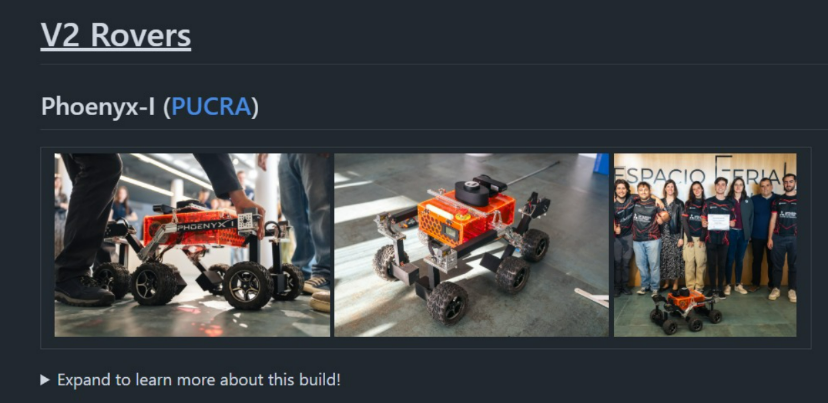
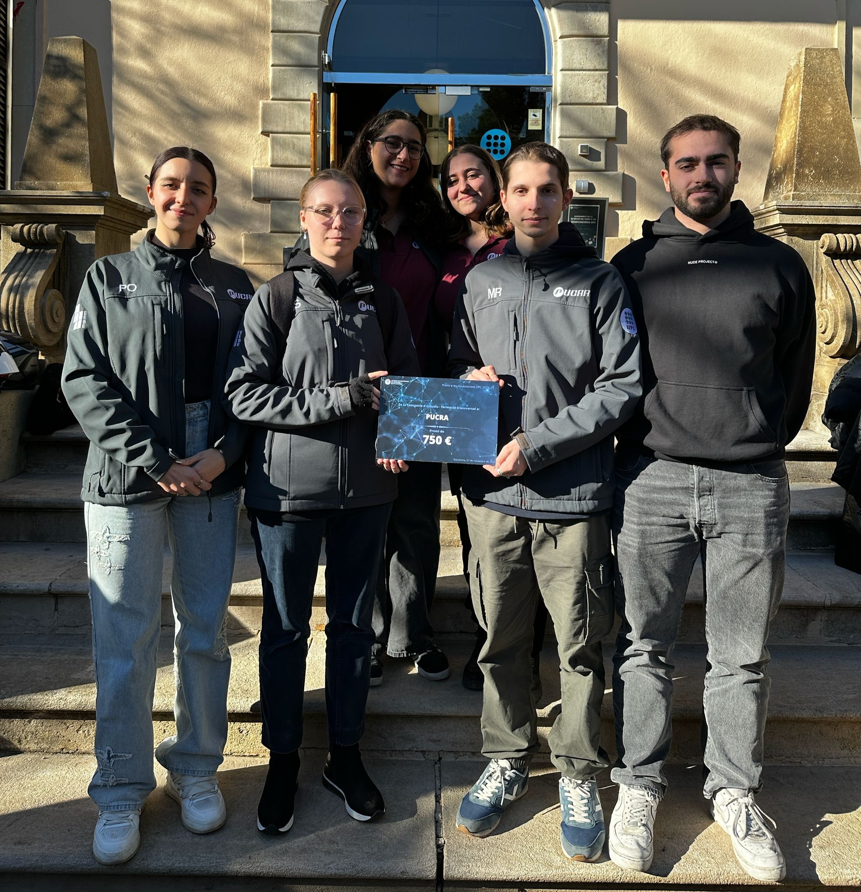
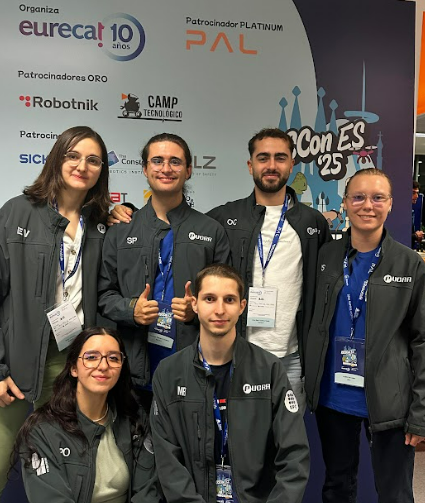
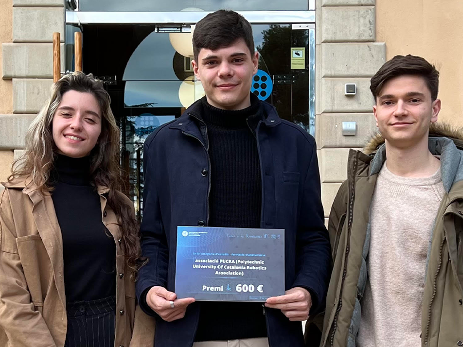
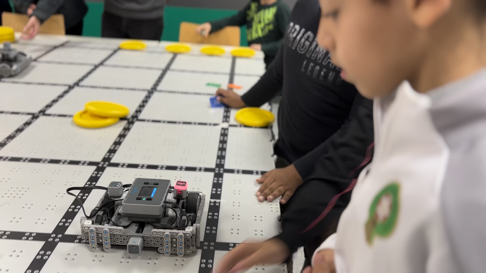

Enero 2026

LA NASA RECONOCIO NUESTRO TALENTO
Por nuestro desempeño en la competición pudimos desarrollar un código para el Rover JPL Open source de la NASA, y gracias a esto obtuvimos el reconocimiento de aparecer en el repositorio de GitHub de este robot open source
Noviembre 2025

PREMIO ASSOCIACIONES UPC 2025
Gracias al proyecto de SENER la UPC volvio a reconocer el trabajo de PUCRA, dando asi a la asociación el premio de educación y formación transversal, ademas de un importe monetario para poder seguir haciendo sus proyectos.
Noviembre 2025

CHARLA EN LA ROSCON
Gracias a nuestros logros conseguimos dar una charla explicando nuestra historia y recorrido en un entorno con gente profesional en la robotica y con tantas ganas de hacer proyectos como nosotros
Noviembre 2022

PREMIO ASSOCIACIONES UPC 2022
Una vez más, la UPC corroboró nuestro trabajo e implicación en la vida universitaria, otorgándonos el premio de asociaciones en la disciplina de estudios y formación transversal, demostrando que nuestro proyecto tiene una gran visión de futuro.
Septiembre 2020

PLAN SOCIAL
Dado que nuestro campus se encuentra entre los barrios del Besòs y la Mina, dentro de las actividades de responsabilidad social que se llevan a cabo desde la dirección de nuestra escuela, hemos colaborado para dar la oportunidad a varios centros socioeducativos del entorno para poder participar en la categoría de IQ de la VEX Robotics Competition, abriendo los horizontes de más de 100 niños en situaciones vulnerables.
Febrero 2020

PREMIO ASSOCIACIONES UPC 2020
PUCRA recibió el 1er premio dirigido a las asociaciones de estudiantes de la UPC para reconocer y promover el asociacionismo, su implicación y el fomento de los valores inspiradores de la vida universitaria.
Septiembre 2018

INICIO DE PUCRA FACTORY
El proyecto surgió de la necesidad de dar continuidad a las nuevas generaciones de la asociación, fomentando las vocaciones científico-tecnológicas de los más jóvenes. Durante los últimos años hemos tutorizado varios equipos propios de secundaria y bachillerato para participar en la categoría de High School de la VEX Robotics Competition.
Septiembre 2017
FUNDACIÓN DE PUCRA
La necesidad de continuar aprendiendo fuera del aula y poder compartir sueños e inquietudes con otros estudiantes, hizo que en 2017, se fundara PUCRA, la primera y única asociación de este tipo en todo el territorio español. El objetivo principal ha sido siempre participar y ganar las competiciones internacionales más importantes del sector.